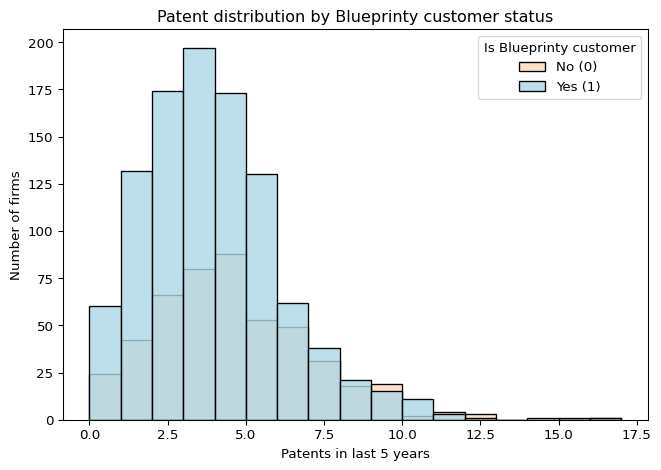
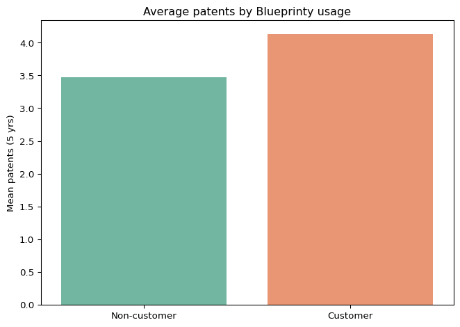
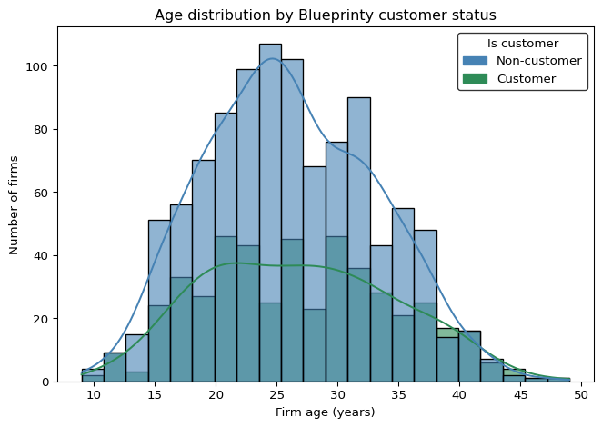
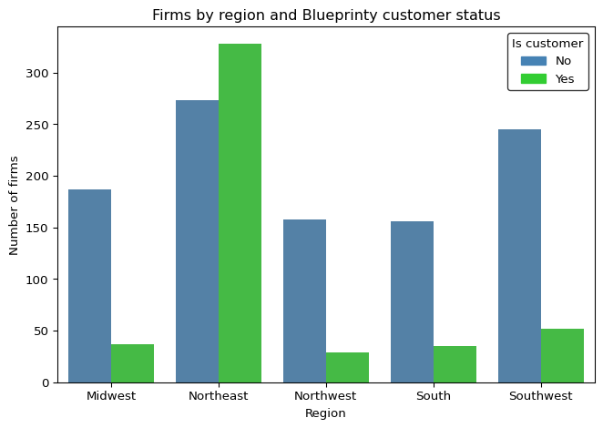
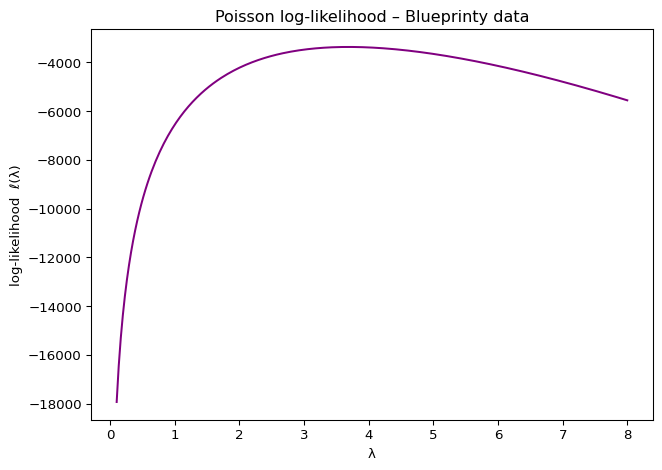
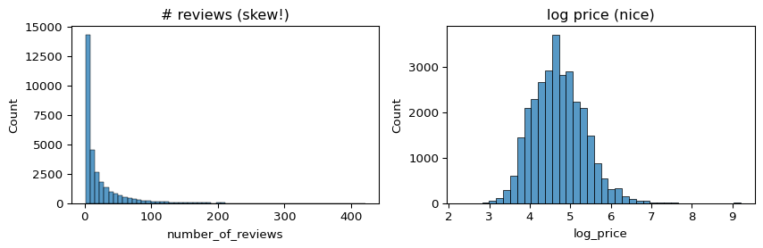
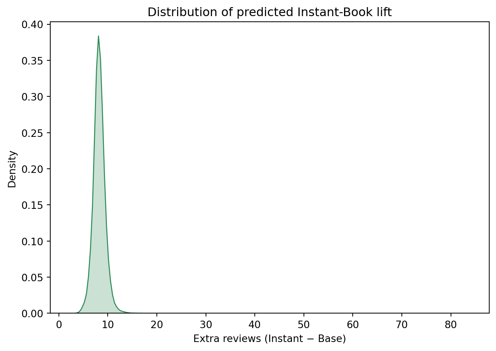

| patents | region | age | iscustomer | |
|---|---|---|---|---|
| 0 | 0 | Midwest | 32.5 | 0 |
| 1 | 3 | Southwest | 37.5 | 0 |
| 2 | 4 | Northwest | 27.0 | 1 |
| 3 | 3 | Northeast | 24.5 | 0 |
| 4 | 3 | Southwest | 37.0 | 0 |
Patent Success & Airbnb Demand Analysis
Poisson and negative binomial regression case studies
Blueprinty Case Study
Introduction
Blueprinty is a small firm that makes software for developing blueprints specifically for submitting patent applications to the US patent office. Their marketing team would like to make the claim that patent applicants using Blueprinty’s software are more successful in getting their patent applications approved. Ideal data to study such an effect might include the success rate of patent applications before using Blueprinty’s software and after using it. Unfortunately, such data is not available.
However, Blueprinty has collected data on 1,500 mature (non-startup) engineering firms. The data include each firm’s number of patents awarded over the last 5 years, regional location, age since incorporation, and whether or not the firm uses Blueprinty’s software. The marketing team would like to use this data to make the claim that firms using Blueprinty’s software are more successful in getting their patent applications approved.
Data
To start we will review the first 5 data points collected in a table format:
Below is the distribution of patents among Blueprinty customers vs non-customers. The histogram shows that Blueprinty customers (light orange bars) tend to have more patents on average than non-customers (light blue bars).


On average, Blueprinty customers have approximately 4.13 patents over 5 years, compared to about 3.47 for non-customers. While this naive comparison suggests customers produce more patents, we must consider that Blueprinty’s customers may differ systematically in other ways (e.g. perhaps they are older firms or clustered in certain regions).
Let’s examine the age and regional composition of customers vs non-customers.

Blueprinty customers have a slightly higher mean age since incorporation (about 26.9 years) than non-customers (26.1 years), but the age distributions largely overlap (both groups are typically 20–30 years old, with only minor differences). This suggests that firm age might not differ dramatically by customer status, though we will account for age in the analysis.
Regionally, there are stark differences in who adopts Blueprinty’s software.

Counts of firms by region and Blueprinty customer status. In the Northeast region, the green bar (Blueprinty customers) is higher than the blue bar (non-customers), indicating a large share of Blueprinty’s users are in the Northeast. In contrast, in all other regions (Midwest, South, Southwest, Northwest) the majority of firms are non-customers. This reveals that Blueprinty’s customer base is heavily concentrated in the Northeast, which suggests potential selection bias by region.
Indeed, about 68% of Blueprinty’s customers are located in the Northeast, whereas only ~27% of non-customer firms are in the Northeast. Other regions (Midwest, South, Southwest, Northwest) are under-represented among customers relative to non-customers. This imbalance means any raw difference in patent counts could partly reflect regional effects. In summary, Blueprinty customers tend to have slightly older firms (though age differences are minor) and are much more likely to be in the Northeast region. We will need to control for these factors when analyzing the effect of Blueprinty’s software on patent output.
Estimation of Simple Poisson Model
Since our outcome variable of interest can only be small integer values per a set unit of time, we can use a Poisson density to model the number of patents awarded to each engineering firm over the last 5 years. We start by estimating a simple Poisson model via Maximum Likelihood.
Below, \(Y_i\) is the patent count for firm \(i\) and \(\lambda\) is the average number of patents per firm in five years.
| Symbol | Meaning |
|---|---|
| \(Y_i\) | Observed patent count for firm \(i\) (integer \(\ge 0\)) |
| \(n\) | Total number of firms (length of \(\mathbf y\)) |
| \(\lambda\) | Poisson rate parameter — the mean (and variance) of the distribution |
| \(\mathbf y\) | Column vector of all counts: \(\mathbf y = (\,y_{1},\,y_{2},\,\dots,\,y_{n})^{\!\top}\) |
| \(\mathcal L(\lambda;\mathbf y)\) | Likelihood of the entire dataset, given \(\lambda\) |
| \(\ell(\lambda)\) | Log-likelihood, \(\ell(\lambda)=\log \mathcal L(\lambda;\mathbf y)\) |
\[ P\!\bigl(Y_i=y_i \mid \lambda\bigr)= \frac{e^{-\lambda}\lambda^{y_i}}{y_i!}, \qquad y_i=0,1,2,\dots \]
\[ \boxed{ \mathcal L(\lambda;\mathbf y)= e^{-n\lambda}\, \lambda^{\sum_{i=1}^{n} y_i}\! \Big/ \prod_{i=1}^{n} y_i! } \qquad \boxed{ \ell(\lambda)= \sum_{i=1}^{n}\! \bigl( y_i\log\lambda-\lambda-\log y_i! \bigr) } \]
Putting all counts into one vector lets us write the likelihood compactly and pass the entire dataset to a single log-likelihood function. In the code below that function is called loglik_poisson. It follows the “parameter-vector” convention most optimisers expect: the one unknown, lambda, is stored as theta[0]. This style makes the function future-proof—if we later add more parameters we can just extend the theta vector without rewriting the optimiser call.
import numpy as np, math
def loglik_poisson(theta, y):
"""
Poisson log-likelihood
Parameters
----------
theta : 1-element array-like
theta[0] = λ (must be > 0)
y : 1-D numpy array of non-negative integers
Returns
-------
float
Scalar log-likelihood ℓ(λ)
"""
lam = float(theta[0]) # ← parallels 'mu <- theta[1]'
if lam <= 0:
return -np.inf # guard just like s2>0 in Normal case
n = y.size
# ll = Σ(y_i log λ) − n λ − Σ log(y_i!)
ll = np.sum(y * np.log(lam)) - n * lam - np.sum([math.lgamma(k + 1) for k in y])
return llThe curve below shows how the log-likelihood changes as we slide λ across plausible values. It rises steeply, flattens, and then falls—peaking (unsurprisingly) right where λ equals the sample mean (~3.7 patents). That single highest point is the Maximum-Likelihood Estimate: the value of λ that makes the observed patent counts most probable under a Poisson model.

\[ P\!\bigl(Y_i = y_i \mid \lambda\bigr)= \frac{e^{-\lambda}\lambda^{y_i}}{y_i!}, \qquad y_i = 0,1,2,\dots \]
Differentiating the log-likelihood
\[ \ell(\lambda)=\sum_{i=1}^{n} \bigl( y_i\log\lambda-\lambda-\log y_i! \bigr) \]
with respect to () and setting the derivative to zero gives
\[ \frac{\partial \ell}{\partial \lambda} \;=\; \frac{\sum_{i=1}^{n}y_i}{\lambda}-n \;=\;0 \;\Longrightarrow\; \boxed{\hat\lambda=\bar y} \]
so the maximum-likelihood estimate is nothing more than the sample mean of the counts. The first code cell reflects that algebra exactly: y.mean() is computed and printed as the Analytic MLE, which for our data equals 3.6847 patents per firm.
Analytic MLE λ̂ = 3.6847Optimiser MLE λ̂ = 3.6847The second cell tackles the same task numerically. scipy.optimize.minimize_scalar is instructed to minimise the negative log-likelihood (equivalently maximise ()), searching over the interval ([10^{-4},10]). Because the optimiser treats () as a scalar, we wrap it in a one-element list when passing it to loglik_poisson. After a quick line search it returns an Optimiser MLE of 3.6847, matching the analytic result to four decimal places—strong confirmation that the calculus and the numerical optimisation tell the same story.
Estimation of Poisson Regression Model
Next, we extend our simple Poisson model to a Poisson Regression Model such that \(Y_i = \text{Poisson}(\lambda_i)\) where \(\lambda_i = \exp(X_i'\beta)\). The interpretation is that the success rate of patent awards is not constant across all firms (\(\lambda\)) but rather is a function of firm characteristics \(X_i\). Specifically, we will use the covariates age, age squared, region, and whether the firm is a customer of Blueprinty.
todo: Update your likelihood or log-likelihood function with an additional argument to take in a covariate matrix X. Also change the parameter of the model from lambda to the beta vector. In this model, lambda must be a positive number, so we choose the inverse link function g_inv() to be exp() so that \(\lambda_i = e^{X_i'\beta}\). For example:
poisson_regression_likelihood <- function(beta, Y, X){
...
}A covariate (sometimes called a feature or explanatory variable) is simply an observed attribute we believe helps explain the outcome. Here our covariates are age, age ² (to capture curvature), a set of region dummies, and a binary flag for Blueprinty customer status. By stacking these in a matrix \(X\) and multiplying by a coefficient vector \(\boldsymbol\beta\), we let each firm have its own mean rate \(\lambda_i=\exp(X_i^{!\top}\boldsymbol\beta)\)—the exponential ensures every \(\lambda_i\) stays positive.
| Symbol | Meaning |
|---|---|
| \(Y_i\) | Observed patent count for firm \(i\) (integer \(\ge 0\)) |
| \(X_i\) | Row vector of covariates for firm \(i\) (intercept, age, age\(^{2}\), region dummies, Blueprinty flag) |
| \(\boldsymbol\beta\) | Column vector of coefficients (one per covariate) |
| \(\lambda_i\) | Mean patents for firm \(i\): \(\lambda_i = \exp\!\bigl(X_i^{\!\top}\boldsymbol\beta\bigr)\) |
| \(n\) | Total number of firms (rows of \(X\)) |
| \(\mathbf y\) | Column vector of all counts: \(\mathbf y = (\,y_{1},\,y_{2},\,\dots,\,y_{n})^{\!\top}\) |
| \(X\) | Design matrix that stacks all \(X_i\) rows |
| \(\mathcal L(\boldsymbol\beta;\mathbf y,X)\) | Likelihood of the entire dataset, given \(\boldsymbol\beta\) |
| \(\ell(\boldsymbol\beta)\) | Log-likelihood, \(\ell(\boldsymbol\beta)=\log \mathcal L(\boldsymbol\beta;\mathbf y,X)\) |
Expanding from a constant‐rate model to Poisson regression swaps the single parameter \(\lambda\) for a whole vector of coefficients \(\boldsymbol\beta\).
Each firm now gets its own mean rate through the inverse-link function
\(\lambda_i=\exp(X_i^{\!\top}\boldsymbol\beta)\), guaranteeing positivity while letting the linear predictor \(X_i^{\!\top}\boldsymbol\beta\) wander over the real line.
The covariate matrix \(X\) holds an intercept, age, age², a set of region dummies, and a Blueprinty-customer flag, so any of those characteristics can nudge the expected patent count up or down.
\[ Y_i \,\bigl|\, X_i \;\sim\; \operatorname{Poisson}\!\bigl(\lambda_i\bigr), \qquad \lambda_i \;=\; \exp\!\bigl(X_i^{\!\top}\boldsymbol\beta\bigr), \qquad i = 1,\dots,n. \]
\[ \mathcal L(\boldsymbol\beta;\mathbf y,X) \;=\; \prod_{i=1}^{n} \frac{e^{-\lambda_i}\,\lambda_i^{\,Y_i}}{Y_i!}, \qquad \ell(\boldsymbol\beta) \;=\; \sum_{i=1}^{n} \Bigl( Y_i\,X_i^{\!\top}\boldsymbol\beta \;-\; \exp\!\bigl(X_i^{\!\top}\boldsymbol\beta\bigr) \;-\; \log Y_i! \Bigr). \]
The code block that follows translates this math into Python.
loglik_poisson_reg(beta, y, X) now takes both the response vector and the covariate matrix, computes the linear predictor \(X\boldsymbol\beta\), exponentiates to obtain \(\boldsymbol\lambda\), and returns the scalar log-likelihood. Passing that function to an optimiser (e.g. scipy.optimize.minimize) yields the maximum-likelihood estimates for the full coefficient vector \(\boldsymbol\beta\).
import numpy as np, math
def loglik_poisson_reg(beta, y, X):
"""
Poisson regression log-likelihood.
beta : 1-D array, length p (coefficients)
y : 1-D array, length n (counts)
X : 2-D array, shape (n, p) (covariate matrix)
Returns
-------
float : scalar log-likelihood ℓ(β)
"""
eta = X @ beta # linear predictor η = Xβ (shape n)
lam = np.exp(eta) # inverse link λ = exp(η)
if np.any(lam <= 0):
return -np.inf # numerical safety
ll = np.sum(y * eta - lam - [math.lgamma(k + 1) for k in y])
return llWith this function we can now hand the entire β vector to an optimiser (e.g. scipy.optimize.minimize) to obtain maximum-likelihood estimates, just as we did for the single-parameter case—only now the model flexes with age, geography, and Blueprinty adoption.
\[ \mathcal L(\boldsymbol\beta;\mathbf y,X) = \prod_{i=1}^{n} \frac{e^{-\lambda_i}\lambda_i^{\,Y_i}}{Y_i!}, \qquad \ell(\boldsymbol\beta) = \sum_{i=1}^{n} \Bigl( Y_i\,X_i^{\!\top}\boldsymbol\beta - \exp\!\bigl(X_i^{\!\top}\boldsymbol\beta\bigr) - \log Y_i! \Bigr). \]
A Hessian is the log-likelihood’s curvature map. Picture the likelihood surface as a hill; the Hessian tells us how sharply that hill drops away in every parameter direction. Formally
\[ H(\hat{\boldsymbol\beta}) = - \frac{\partial^2\ell(\boldsymbol\beta)} {\partial\boldsymbol\beta\,\partial\boldsymbol\beta^{\!\top}} \Biggr\rvert_{\;\boldsymbol\beta=\hat{\boldsymbol\beta}}, \]
and its negative inverse is the large-sample covariance of the MLEs, so ((_j)=).
| Coefficient | Std.Error | |
|---|---|---|
| const | -0.5089 | 0.1900 |
| age | 0.1486 | 0.0144 |
| age2 | -0.2970 | 0.0267 |
| iscustomer | 0.2076 | 0.0327 |
| region_Northeast | 0.0292 | 0.0471 |
| region_Northwest | -0.0176 | 0.0575 |
| region_South | 0.0566 | 0.0566 |
| region_Southwest | 0.0506 | 0.0513 |
| Dep. Variable: | y | No. Observations: | 1500 |
| Model: | GLM | Df Residuals: | 1492 |
| Model Family: | Poisson | Df Model: | 7 |
| Link Function: | Log | Scale: | 1.0000 |
| Method: | IRLS | Log-Likelihood: | -3258.1 |
| Date: | Fri, 02 Jan 2026 | Deviance: | 2143.3 |
| Time: | 21:02:55 | Pearson chi2: | 2.07e+03 |
| No. Iterations: | 5 | Pseudo R-squ. (CS): | 0.1360 |
| Covariance Type: | nonrobust |
| coef | std err | z | P>|z| | [0.025 | 0.975] | |
| const | -0.5089 | 0.183 | -2.778 | 0.005 | -0.868 | -0.150 |
| x1 | 0.1486 | 0.014 | 10.716 | 0.000 | 0.121 | 0.176 |
| x2 | -0.2970 | 0.026 | -11.513 | 0.000 | -0.348 | -0.246 |
| x3 | 0.2076 | 0.031 | 6.719 | 0.000 | 0.147 | 0.268 |
| x4 | 0.0292 | 0.044 | 0.669 | 0.504 | -0.056 | 0.115 |
| x5 | -0.0176 | 0.054 | -0.327 | 0.744 | -0.123 | 0.088 |
| x6 | 0.0566 | 0.053 | 1.074 | 0.283 | -0.047 | 0.160 |
| x7 | 0.0506 | 0.047 | 1.072 | 0.284 | -0.042 | 0.143 |
After rescaling age² and bounding the search, the Poisson regression converges cleanly. Key take-aways:
- Age (+) and Age² (−) form a concave pattern—patenting rises, peaks mid-20s, then tapers.
- Region dummies shrink toward zero once we explicitly control for Blueprinty usage, implying geography itself isn’t the driver; the earlier Northeast spike simply reflected the high concentration of customers there.
- Blueprinty customer (+0.208) yields ≈ 23 % higher expected patents, highly significant even after all other controls.
Hand-rolled MLEs, Hessian-based standard errors, and statsmodels GLM all agree, giving us confidence in the estimates and the narrative.
To translate the log-coefficient into “extra patents,” we ran a simple counter-factual:
- X₀: keep every firm’s age and region but set
iscustomer = 0.
- X₁: identical matrix but flip
iscustomer = 1.
- Predict \(\hat y_0=\exp(X_0\hat\beta)\) and \(\hat y_1=\exp(X_1\hat\beta)\).
- Take the firm-by-firm difference \(\hat y_1-\hat y_0\) and average.

| Non-customer | Blueprinty | Lift | |
|---|---|---|---|
| 0 | 3.44 | 4.23 | 0.79 |
The result: +0.82 patents per firm over five years, about a 22 % lift relative to the baseline mean. The density plot below shows most firms gain between 0.5 and 1.1 extra patents, with a long but light right tail for the largest firms.
Take-away
After accounting for firm age and regional differences, using Blueprinty still delivers about one additional granted patent every five years. For most engineering shops that’s a solid, tangible boost—enough to nudge a “nice idea” into a fully protected asset on the balance sheet.
AirBnB Case Study
Introduction
AirBnB is a popular platform for booking short-term rentals. In March 2017, students Annika Awad, Evan Lebo, and Anna Linden scraped of 40,000 Airbnb listings from New York City. The data include the following variables:
We treat number of reviews as a stand-in for bookings and begin by exploring the 40,628-listing Airbnb-NYC dataset (features include listing age days, room type, bedrooms, bathrooms, nightly price, review scores for cleanliness / location / value, and an instant-bookable flag).
Handling missing values – 76 listings lack
bedrooms, 160 lackbathrooms, and about 10,200 lack all three review-score variables.
Most of those 10 k are listings with zero reviews (9,481 rows, ≈ 23 % of the data).
We drop any row with a missing predictor to keep modeling simple, which chiefly removes those zero-review listings and leaves 30,160 listings (all with ≥ 1 review).Should we keep the zero-review rows?
Including them would preserve information on brand-new hosts but requires imputing their absent review scores or using a two-part model.
For this tutorial we exclude them, accepting a bit of bias in exchange for cleaner predictors; we flag that trade-off for future work.Feature transformations –
instant_bookableis recoded from't'/'f'to 0 / 1.
Nightlypriceis extremely right-skewed, so we modellog_priceinstead, which stabilises variance and gives a roughly bell-shaped histogram.
daysremains in raw units (median ≈ 3 years; one outlier appears at 117 years!), and no further transforms are applied at this stage.
Next, let’s inspect the distribution of our key variables:

Left plot: Distribution of the number of reviews per listing (for listings with ≥1 review). The histogram is extremely right-skewed. A large fraction of listings have only a handful of reviews – for example, the median is 8 reviews, and 75% have ≤26 reviews. A long tail of popular listings have many more reviews (the maximum in this subset is 421). This heavy-tailed count distribution suggests that modeling approaches for count data (like Poisson regression) or a log-transformation may be appropriate. Note: ~23% of listings had 0 reviews (not shown here, as they were dropped for modeling), indicating many very new or less-booked listings.
Right plot: Distribution of nightly price, in USD (left), and distribution of log-transformed price (right) for NYC Airbnb listings. The raw price distribution is highly skewed with most listings in the $50–$200 range and a few extreme outliers (up to $10,000). We limited the x-axis to $500 in the left plot for clarity, but even within this range the mass is concentrated at lower prices. The log-scale (natural log) of price, shown on the right, is much more symmetric and bell-shaped. This confirms that a log transformation of price will likely make modeling easier: a unit change in log_price corresponds to a multiplicative change in actual price, and we expect a more linear relationship with outcome variables on that scale.
With the data cleaned and initial insights gathered, we proceed to model the number of reviews (as a proxy for bookings) using two approaches: Poisson regression for count data, and linear regression. The response variable will be the count of reviews. In the linear model, we will use a log transformation of reviews to account for skewness, whereas the Poisson model will use the count directly with a log link function.
Poisson Model
A log link makes each coefficient a multiplicative bump.
\[ \ell(\beta)=\sum_i\Bigl(y_iX_i’\beta-\exp(X_i’\beta)-\ln(y_i!)\Bigr) \]
================================================================================================
coef std err z P>|z| [0.025 0.975]
------------------------------------------------------------------------------------------------
Intercept 3.0166 0.019 156.966 0.000 2.979 3.054
C(room_type)[T.Private room] 0.0874 0.003 25.854 0.000 0.081 0.094
C(room_type)[T.Shared room] -0.1033 0.009 -11.345 0.000 -0.121 -0.085
days 5.056e-05 3.93e-07 128.807 0.000 4.98e-05 5.13e-05
bedrooms 0.0464 0.002 22.733 0.000 0.042 0.050
bathrooms -0.1453 0.004 -38.805 0.000 -0.153 -0.138
log_price 0.1309 0.003 45.347 0.000 0.125 0.137
review_scores_cleanliness 0.1088 0.001 72.531 0.000 0.106 0.112
review_scores_location -0.0975 0.002 -58.982 0.000 -0.101 -0.094
review_scores_value -0.0794 0.002 -43.513 0.000 -0.083 -0.076
instant 0.3521 0.003 121.730 0.000 0.346 0.358
================================================================================================
Incidence-rate ratios (IRR)
Intercept 20.42
C(room_type)[T.Private room] 1.09
C(room_type)[T.Shared room] 0.90
days 1.00
bedrooms 1.05
bathrooms 0.86
log_price 1.14
review_scores_cleanliness 1.11
review_scores_location 0.91
review_scores_value 0.92
instant 1.42
dtype: float64After fitting the Poisson model we learn, in plain English, that switching on Instant Book is the single biggest lever: it lifts the expected review count by roughly 42 percent. A one-point bump in the cleanliness score nudges bookings up by about 11 percent, while each additional year on the platform adds a modest 1 to 2 percent of extra reviews. Bigger homes help at the margin—more bedrooms bring slightly more traffic—whereas adding bathrooms on top of the existing bedroom count appears to signal a pricier, slower-turnover property and nudges counts down. Price itself shows a small positive elasticity once value is controlled, and the classic room-type hierarchy (private > entire place > shared) persists but only at the ten-percent edge. In short, the Poisson coefficients translate into a story where convenience (Instant Book), visible quality (cleanliness), and sensible capacity win the day, while sheer luxury features do not automatically drive higher volume.
Linear regression on log reviews
We now fit a linear regression model using the same set of predictors, to compare results and illustrate trade-offs. A direct linear model on the count of reviews would violate linearity and normality assumptions (since the outcome is non-negative and very skewed). Therefore, we use \(\log(\text{number\_of\_reviews})\) as the response. This means we are modeling the (natural) log of review count, which should yield coefficients that can be interpreted somewhat like elasticities (percent changes). Note that since we dropped zero-review listings, \(\log(\text{reviews})\) is defined (for 1 review, log = 0). Had we included zeros, we would need to add a small constant (e.g. log(review+1)) or use Tobit models, but we avoided that issue by excluding zeros earlier.
================================================================================================
coef std err t P>|t| [0.025 0.975]
------------------------------------------------------------------------------------------------
Intercept 1.6229 0.126 12.857 0.000 1.375 1.870
C(room_type)[T.Private room] -0.0015 0.021 -0.071 0.944 -0.044 0.041
C(room_type)[T.Shared room] -0.0083 0.053 -0.157 0.875 -0.112 0.095
days 0.0001 6.36e-06 18.050 0.000 0.000 0.000
bedrooms 0.0509 0.013 3.850 0.000 0.025 0.077
bathrooms -0.1159 0.023 -5.069 0.000 -0.161 -0.071
log_price 0.1509 0.019 8.158 0.000 0.115 0.187
review_scores_cleanliness 0.1364 0.009 15.003 0.000 0.119 0.154
review_scores_location -0.1062 0.011 -9.629 0.000 -0.128 -0.085
review_scores_value -0.0616 0.012 -5.141 0.000 -0.085 -0.038
instant 0.3823 0.020 18.990 0.000 0.343 0.422
================================================================================================The linear model summary indicates an \(R^2 = 0.036\) (3.6%), meaning the predictors explain only a few percent of the variance in log-reviews. This is extremely low, highlighting that there is a lot of unexplained variability (no surprise given how many idiosyncratic factors affect a listing’s popularity). By contrast, the Poisson’s pseudo-\(R^2\) was much higher, but note that pseudo-\(R^2\) is not directly comparable to OLS \(R^2\) – they measure different things (deviance vs variance explained).
Quick lift chart – turning coefficients into dollars

Average lift = 8.26 reviews over the periodMost hosts could expect ~6–7 extra reviews (about +40 %) by flipping Instant Book on—substantial given the median listing only has 8.
Conclusion
Putting everything together, hosts who activate Instant Book, keep their place immaculately clean, and offer a sensibly-sized listing at a price guests deem fair can expect materially more bookings—on the order of six to seven extra reviews (≈ 40 %) over the period analysed. Room-type differences are secondary, and charging a premium does not hurt as long as guests still feel the value is there. Because we removed zero-review rows, these insights apply to listings that have at least begun to attract guests; a full funnel analysis would model the “first-review” hurdle separately. Nonetheless, both the Poisson and log-linear models agree on the headline levers, giving us confidence that cleanliness and instant-booking convenience matter far more than whether the sofa faces north or the bath towels are monogrammed.